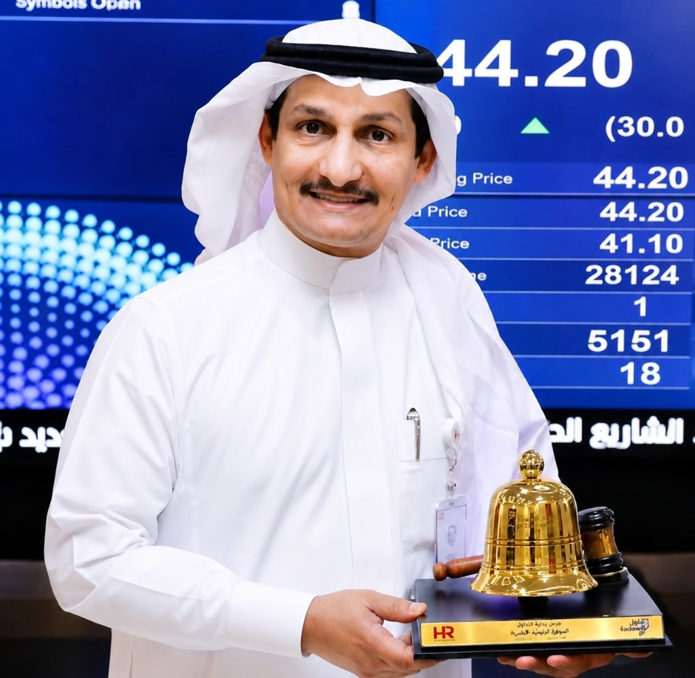

التقارير منجزة للسيد علي الحربي

السيد علي الحربي
روبوتات تنظيف المنازل
مركز التقارير التنفيذية
يجمع هذا المركز التقارير المتخصصة لصاحب القرار: مصانع الصين وفرص العلامة الخاصة، سوق سيول وتقارير الزيارة، والمنافسة السعودية — مع تقرير Weave Isaac كملف تقني منفصل.
اختر التقرير المتخصص
كل تقرير مستقل — والرئيسية تجمعها فقط
الصين · روبوتات التنظيف
مصانع وتصميم وتصنيع، كتالوغ منتجات، منافسو السعودية، أسعار، امتثال سابر، وخطة 90 يوماً.
- 15 شركة + قائمة مختصرة من 6 مصانع
- 57 منتجاً مرجعياً بروابط رسمية
- دراسة منافسين محليين ومراقبة أسعار شهرية
- سعر مقترح: 1,299–1,599 و 2,499–3,199 ر.س
كوريا الجنوبية · الروبوتات المنزلية
نظرة سوق سيول + تقارير Due Diligence قبل الزيارة لست شركات ذات أولوية.
- RLWRLD · Hyundai LAB · Neubility
- ROBOTIS · RoboCare · Hyodol
- سياق السوق الكوري والمقارنات
Weave Robotics · Isaac
شركة أمريكية ناشئة لروبوت منزلي ذكي — من طي الملابس إلى المساعدة المنزلية الشاملة.
- الملخص التنفيذي والتمويل
- Isaac 0 / Isaac 1 ومحاور المنتج
- التكنولوجيا والمخاطر والحكم
تحليل موقع INC Robotics
تقرير تنفيذي شامل للتصميم، الثقة، التحويل، SEO والأداء — مع خطة إصلاح من 4 مراحل.
- التقييم العام: 5/10 — أساس بصري متوسط
- 16 مشكلة موثّقة مع إجراءات مقترحة
- هيكل صفحة رئيسية وخارطة تنفيذ
أقسام تقرير الصين
مقسّم لصفحات قصيرة — ادخل مباشرة للقسم المطلوب
ملخص القرار
المؤشرات والتوصية ونماذج الشراكة.
اقرأ المزيد شركاتالشركات والمصانع
جدول الموردين والملفات العميقة.
اقرأ المزيد منتجاتكتالوغ المنتجات
موديلات، مواصفات، روابط وفيديو.
اقرأ المزيد منافسةالمنافسون في السعودية
رسمي / تجزئة / استيراد رمادي والأسعار.
اقرأ المزيد سوقالسعودية والامتثال
حجم السوق، سابر، والمواصفة المقترحة.
اقرأ المزيد خطةالخطة والأدوات
حاسبة التكلفة، 90 يوماً، والمخاطر.
اقرأ المزيدماذا يقرأ الرئيس أولاً؟
لقرار توريد أو علامة خاصة لتنظيف المنازل: ابدأ بـتقرير الصين — القائمة المختصرة، المنافسة السعودية، والسعر المقترح.
لزيارة كوريا والشراكات هناك: تقرير سيول وملفات Due Diligence. لتقييم منصة روبوت منزلي أمريكية (طي الملابس/مساعدة): تقرير Isaac.
روبو روك ودريمي أخطر منافسين محلياً؛ شاومي يسيطر على القيمة؛ إيكوفاكس قوي في الزجاج. الفرصة الأفضل: خدمة وضمان سعودي حقيقي، ثم المسابح والزجاج حيث المنافسة المنظمة أضعف.